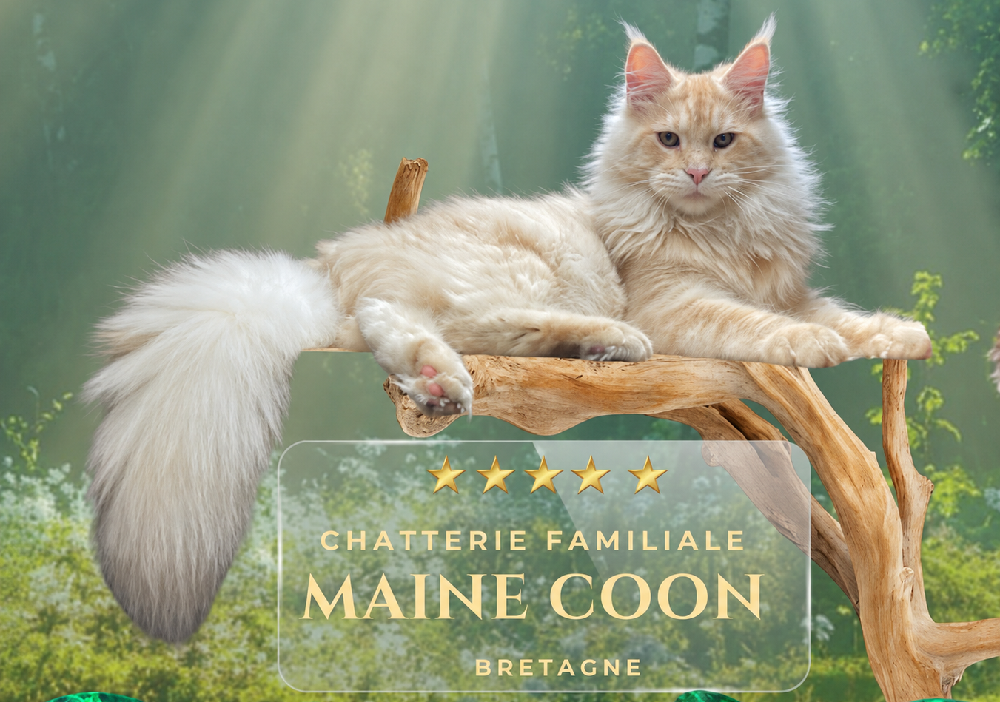

A la Chatterie de la Lignée d'Émeraude,
nous élevons aujourd'hui les compagnons
de vie que les familles aimeront demain.
♡ Parce que aimer ses chats, c'est ne jamais cesser d'apprendre pour eux. ♡
Bienvenue à la Chatterie de la Lignée d'Émeraude.
Ici, chaque chaton naît au sein d'une famille, grandit entouré d'amour et bénéficie d'une socialisation attentive. Mais notre histoire ne commence pas avec la naissance de notre chatterie. Elle commence bien avant, avec une profonde remise en question qui a transformé notre façon de comprendre le chat.
C'est cette histoire que nous vous invitons à découvrir.